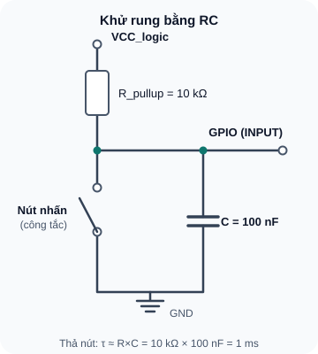

Interrupt — Ngắt Phần Cứng & Timer
Cơ chế phản hồi sự kiện tức thì — từ đếm xung encoder đến timer interrupt chính xác và debounce nút nhấn chuẩn..
- Hiểu interrupt và so sánh với polling — khi nào dùng
- Viết ISR (Interrupt Service Routine) đúng cách — ngắn, nhanh
- Dùng volatile cho biến chia sẻ ISR ↔ main loop
- External interrupt: đếm xung encoder motor
- Debounce nút nhấn hardware (RC) và software (millis())
- Timer interrupt: thực hiện task chính xác theo thời gian (ESP32)
- Tránh 5 lỗi cấm trong ISR: delay(), Serial, malloc, blocking call
1. Interrupt vs Polling
| Tiêu chí | Polling | Interrupt |
|---|---|---|
| CPU sử dụng | Cao — liên tục kiểm tra | Thấp — chỉ khi có sự kiện |
| Phản hồi | Chậm — phụ thuộc chu kỳ loop | Tức thì (µs) |
| Bỏ lỡ sự kiện | Có thể nếu loop chậm | Không (hardware priority) |
| Dùng khi | Sự kiện chậm, đơn giản | Encoder, nút nhấn, timing chính xác |
2. External Interrupt — Đếm xung Encoder
// External Interrupt — Arduino Uno
volatile long pulseCount = 0; // volatile bắt buộc!
const int ENC_PIN = 2; // INT0
void onPulse() { pulseCount++; } // ISR: cực ngắn!
void setup() {
Serial.begin(115200);
pinMode(ENC_PIN, INPUT_PULLUP);
attachInterrupt(digitalPinToInterrupt(ENC_PIN), onPulse, RISING);
}
void loop() {
noInterrupts();
long count = pulseCount; // Đọc atomic
interrupts();
Serial.println(count);
delay(500);
}
- KHÔNG delay() — gây deadlock với timer
- KHÔNG Serial.print() — Serial dùng interrupt buffer nội bộ
- KHÔNG malloc/new — heap không thread-safe
- Phải có volatile trên mọi biến chia sẻ ISR↔loop
- Đọc biến 32-bit: dùng noInterrupts()/interrupts() để atomic read
3. Debounce Nút Nhấn

Đọc mô tả D26-1
VCC_logic qua R_pullup 10 kΩ tới nút GPIO. Công tắc nhấn từ nút GPIO xuống GND. Tụ 100 nF cũng nối từ nút GPIO xuống GND, song song với công tắc, đặt sát nút GPIO. GPIO ở chế độ INPUT.
4. Timer Interrupt — ESP32 Hardware Timer
// ESP32 Timer Interrupt — blink LED mỗi 500ms chính xác
hw_timer_t *timer = NULL;
volatile bool ledFlag = false;
portMUX_TYPE timerMux = portMUX_INITIALIZER_UNLOCKED;
void IRAM_ATTR onTimer() {
portENTER_CRITICAL_ISR(&timerMux);
ledFlag = true; // Set flag, xử lý trong loop
portEXIT_CRITICAL_ISR(&timerMux);
}
void setup() {
pinMode(2, OUTPUT);
// Timer 0, prescaler 80 → clock 1MHz (80MHz/80)
timer = timerBegin(0, 80, true);
timerAttachInterrupt(timer, &onTimer, true);
timerAlarmWrite(timer, 500000, true); // 500ms
timerAlarmEnable(timer);
}
void loop() {
portENTER_CRITICAL(&timerMux);
bool flag = ledFlag;
ledFlag = false;
portEXIT_CRITICAL(&timerMux);
if (flag) digitalWrite(2, !digitalRead(2));
}
1: Không có volatile: compiler tối ưu bằng cách cache biến trong register CPU. ISR thay đổi biến trong RAM, nhưng main loop đọc giá trị cũ trong register → không bao giờ thấy cập nhật từ ISR. volatile báo compiler luôn đọc từ RAM.
2: Tốc độ = (5000 xung/s) / (1000 xung/vòng) = 5 vòng/s = 5×60 = 300 RPM.
3: Software debounce: đặt cửa sổ ổn định 50ms để xử lý bounce dưới 20ms mà vẫn nhận lần nhấn kéo dài hơn 200ms; ISR chỉ đặt cờ, xác nhận trạng thái sau cửa sổ thời gian trong loop. RC 10kΩ+100nF có τ=1ms chỉ làm mềm các cạnh/xung rất ngắn, không bảo đảm loại xung bounce 5ms hoặc 20ms.